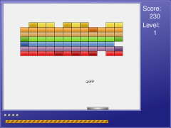

2009-06-20
The sources are now in Bazaar. As you can see, I've been using Bazaar from the beginning but the Savannah support wasn't there. I recently found out that it was available so I pushed it in. Check it out here.
2008-09-30
Finally, after more than a month, version 0.8.0 is released!
This version has a new script system using GNU Guile.
Almost everything can be scripted. Fonts used, skins, graphics for almost anything, which powerups are used, are more!
2008-08-26
Website finally up! Version 0.7.1 has been released and version 0.8.0 will be released very soon with new graphics/levelsets and a completely new extension system using GNU Guile.
Ball and Paddle is an extensible ball and paddle game that lets you script the events and attributes of the objects (balls, blocks, powerups, etc.) with GNU Guile, the official GNU extension language.

Ball and Paddle can be found on http://ftp.gnu.org/gnu/ballandpaddle/ [via http] and ftp://ftp.gnu.org/gnu/ballandpaddle/ [via FTP]. It can also be found on one of our FTP mirrors; please use a mirror if possible.
Ball and Paddle uses Bazaar for version control. Get it by
bzr branch http://bzr.savannah.gnu.org/r/ballandpaddleor you can browse the sources.
It requires SDL, SDL_image, SDL_mixer, SDL_ttf, and GNU guile.
We currently need more and complete level sets for the game to be really fun. Also, I'd be willing to look into a level format that doesn't require guile (so that an editor could be made) but uses guile in the backend i.e. the level format refers back to guile code/functions.
Ball and Paddle documentation can be found at http://www.gnu.org/manual/. You may also find more information about Ball and Paddle by running info ballandpaddle, man ballandpaddle.
Ball and Paddle has two mailing lists: <help-ballandpaddle@gnu.org> and <bug-ballandpaddle@gnu.org>.
To subscribe to these or any GNU mailing lists, please send an empty mail with a Subject: header line of just "subscribe" to the relevant -request list. For example, to subscribe yourself to GNU announcement list, you would send mail to <info-gnu-request@gnu.org> with no body and a Subject: header line of just "subscribe". Or you can use the mailing list web interface.
If you would like any new feature to be included in future versions of Ball and Paddle, please send a request to <help-ballandpaddle@gnu.org>.
Please remember that development of Ball and Paddle is a volunteer effort, and you can also contribute to its development. For information about contributing to the GNU Project, please read How to help GNU.
If you think you have found a bug in Ball and Paddle, then please send as complete a report as possible to <bug-ballandpaddle@gnu.org>.
Ball and Paddle is currently being maintained by Eric P. Hutchins. <hutchiep190@potsdam.edu>.
Please send FSF & GNU inquiries to
gnu@gnu.org.
There are also other ways to contact
the FSF.
Please send broken links and other corrections or suggestions to
hutchiep190@potsdam.edu.
Copyright © 2008 Free Software Foundation, Inc.,
51 Franklin St, Fifth Floor, Boston, MA 02110, USAVerbatim copying and distribution of this entire article are permitted worldwide, without royalty, in any medium, provided this notice, and the copyright notice, are preserved.